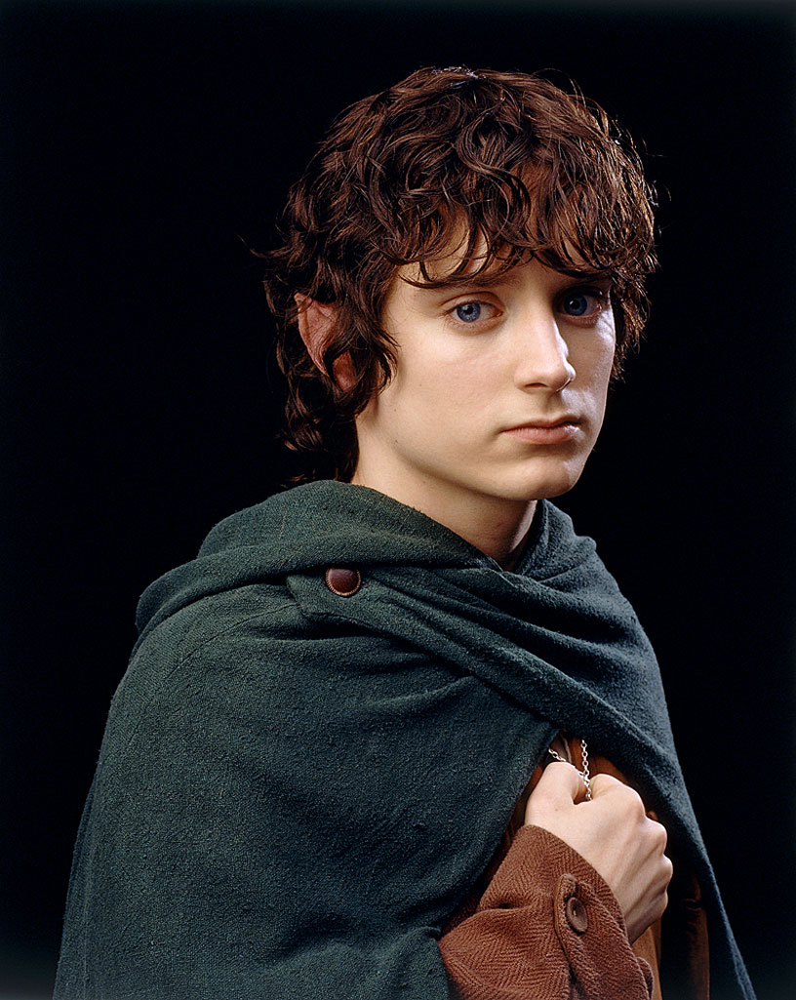

frodo

frodo baggins
"I will take the Ring, though I do not know the way..." - Frodo, at the Council of Elrond, in The Fellowship of the Ring
Frodo Baggins, son of Drogo Baggins, was a Hobbit of the Shire during the Third Age. He was, and still is, Tolkien's most renowned character for his leading role in the Quest of the Ring, in which he bore the One Ring to Mount Doom, where it was destroyed. He was a Ring-bearer, best friend to his gardener, Samwise Gamgee, and one of the three Hobbits who sailed from Middle-earth to the Uttermost West at the end of the Third Age.